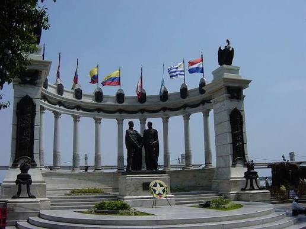
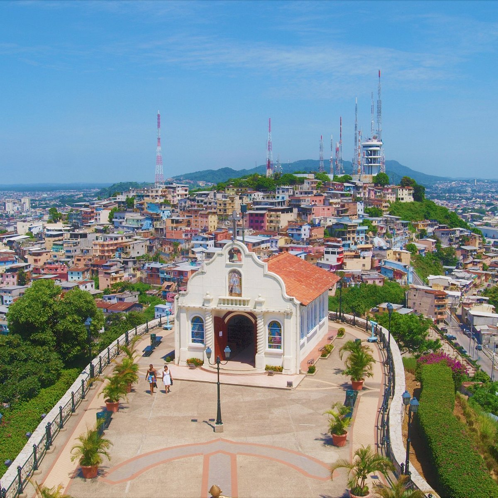
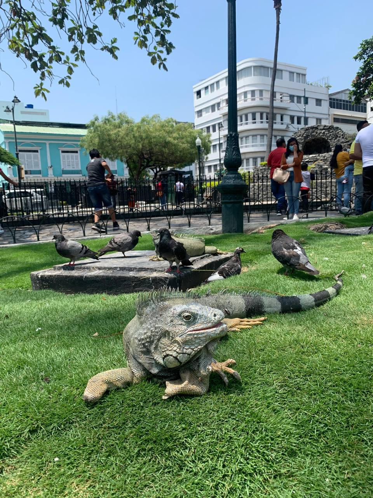
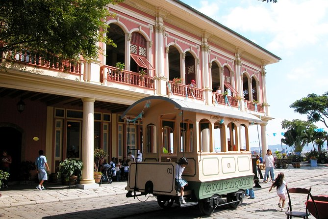
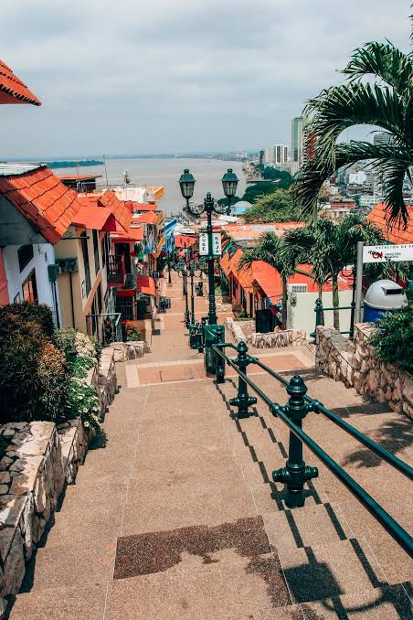
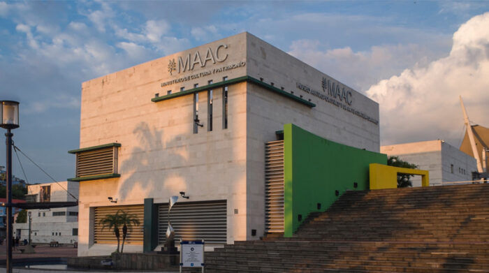
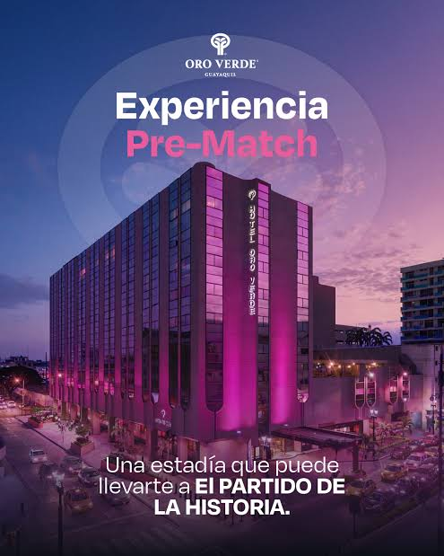
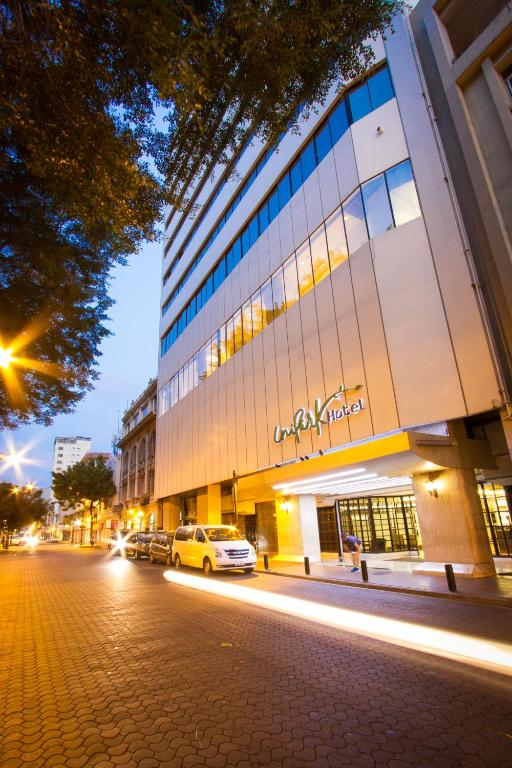
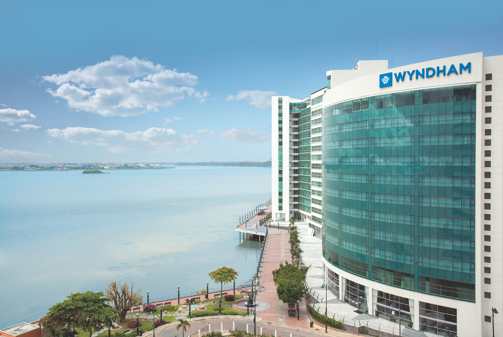

Malecón 2000
Un proyecto de regeneración urbana de 2.5 km de extensión repleto de monumentos históricos, jardines botánicos, centros comerciales y áreas de recreación infantil.

Un proyecto de regeneración urbana de 2.5 km de extensión repleto de monumentos históricos, jardines botánicos, centros comerciales y áreas de recreación infantil.

El primer barrio residencial de la ciudad con más de 400 años de historia. Sus coloridas casas de madera albergan galerías de arte, bares y talleres artesanales.

Famoso parque tradicional donde docenas de iguanas verdes conviven libremente con los visitantes en medio de vegetación tropical y monumentos ecuestres.

Espacio temático dividido en tres zonas: Vida Silvestre, Tradiciones y Arquitectura Urbana, mostrando la flora, fauna y memoria colonial guayaquileña.

Subir los 444 escalones conduce a la cima donde se erige la Capilla de la Virgen de la Merced y el Faro con vista panorámica de 360° sobre toda la ciudad.

Institución cultural referente del país con colecciones arqueológicas precolombinas, arte contemporáneo y salas de proyecciones cinematográficas.

Hospedaje de lujo con excelente gastronomía, piscina y atención personalizada.

Ubicado frente al Parque Seminario, perfecto para viajes de negocios y descanso.

Ubicado en Puerto Santa Ana, ofrece vistas panorámicas al río y servicios de alta clase.